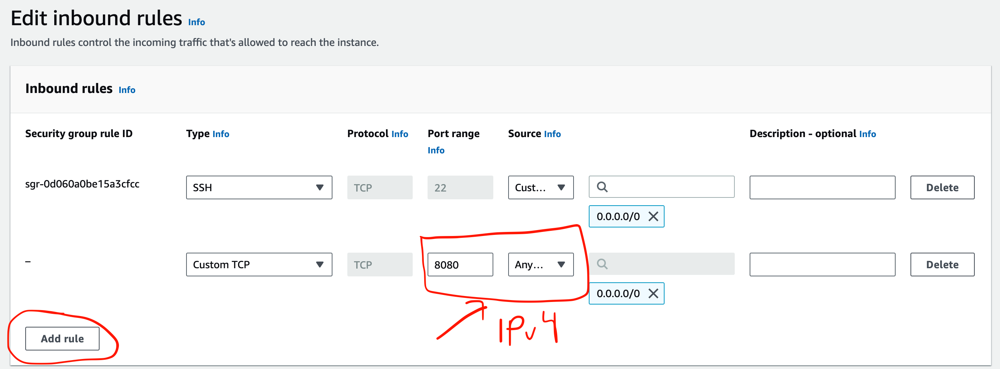
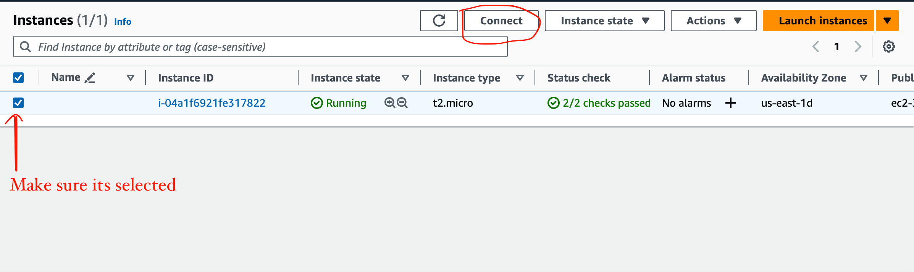
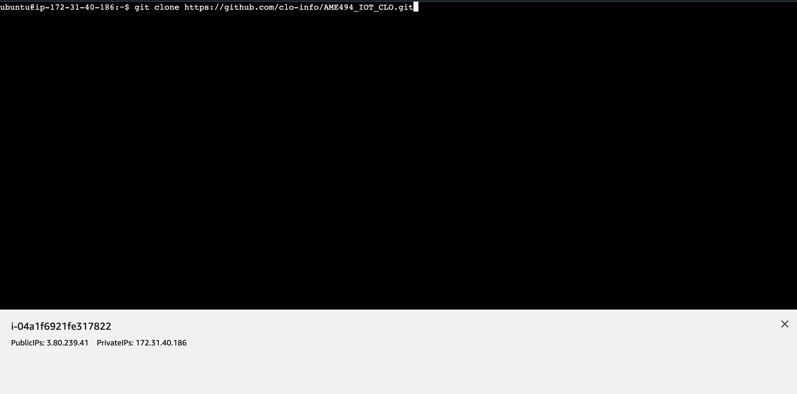

Temperature/Humidity
Tutorial
AWS Server - it is assumed you already have an AWS account and well as access to a sandbox and Arduino
1: Open and connect to an EC2 instance running on Ubuntu with the following settings: AMI Ubuntu version 20.4 LTS, t.2 micro, vockey as the key pair,
with a new security group and 28 GiB
2: Click on the instance ID and go to the security tab
3: Click on the blue security group link and go to edit inbound rules
4: Click add rule and enter a new rule that open port 8080, set to IPv4 protocol, then hit 'Save Rules'

5: Go back to the instances screen and connect to the ubuntu shell

6: Run the command between the two single quotes and wait for it to finish completel:
'curl -s https://gist.githubusercontent.com/tejaswigowda/f289e9bff13d152876e8d4b3281142f8/raw/df37df2e16a3166e686357a045751a7c18bbeebe/installNodeMongoUbuntu16.04.sh | bash'
7: Go to my repository at: 'https://github.com/clo-info/AME494_IOT_CLO'
8: Press the blue 'Code' button and copy the URL
9: Return to your EC2 Server, and enter 'git clone ' and then paste the URL, let the command run its course

10: CD to AME494_IOT_CLO/assignments/A4/code/captureDataServer-TempHum
11: type in node server.js to run the server
Arduino
1: Open Arduino
2: Open the DHT11Default.ino file
3: Replace ssid and password to the network/hotspot you have access to
4: Replace the placeholder IP address with your specific EC2 server's public-facing IP address
5: Run the Arduino IDE file